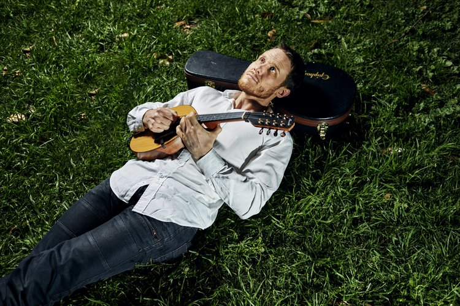
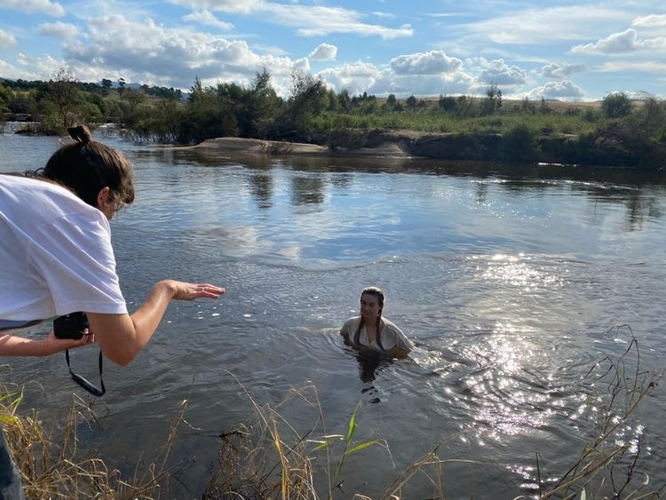

Is one of seven initiatives that artsACT is delivering as part of the Creative Recovery and Resilience Program.
artsACT is delivering the project to further its goals for recovery and resilience of the local arts sector following disruption due to the ongoing pandemic. The Creative Recovery and Resilience Program aims to pilot new models of delivering arts industry support; and to identify ongoing and emergent needs of the arts sector.
contour 556 is delivering the City Commissions project on behalf of artsACT.
Contour 556 is commissioning works from three artists: Alison Alder, Michael Sollis, and Sammy Hawker.
The City Commissions project tasks three artists with exploring the identity of the city as it is expressed through the contribution of community organisations.
The artists will experience new collaborative opportunities, working closely with contour 556, artsACT and the community organisations to develop/install/perform/deliver their artwork.
Through artsACT, the program has a dual focus – recovery and resilience. Recovery can occur with a return to public engagement and resumption of activities, supported by public funding. Resilience will grow the capabilities of arts practitioners and take advantage of other forms of engagement that have emerged due to the technological and societal changes caused by our response to the pandemic.
by Alison Alder x Hands On Studio
by Michael Sollis x Cancer Council ACT
by Sammy Hawker x Headspace Canberra